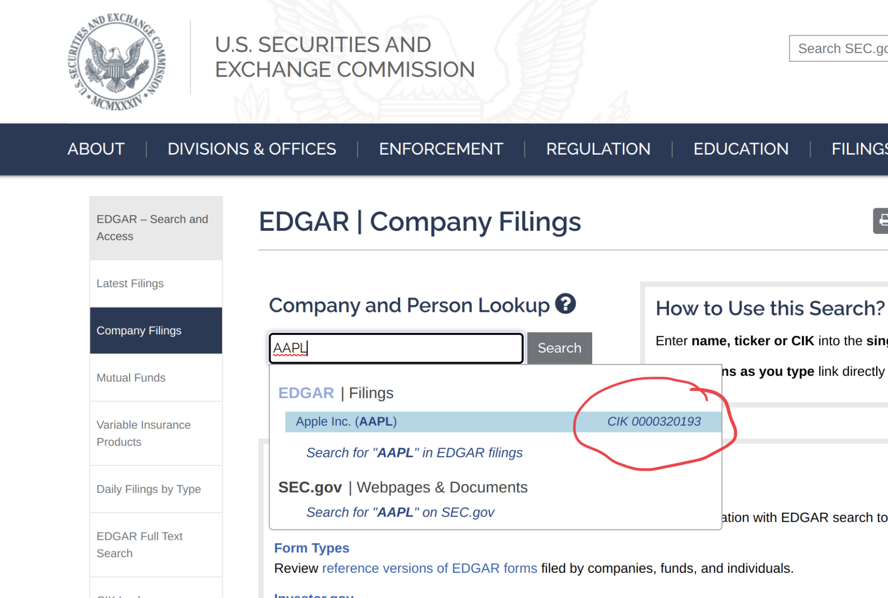
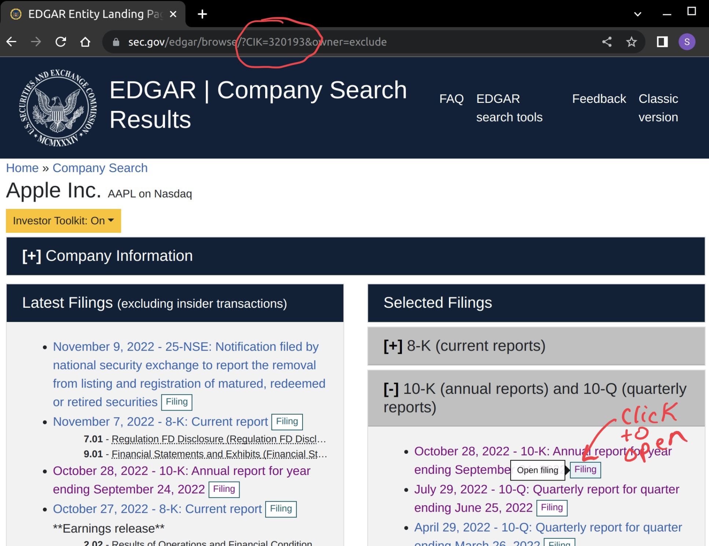
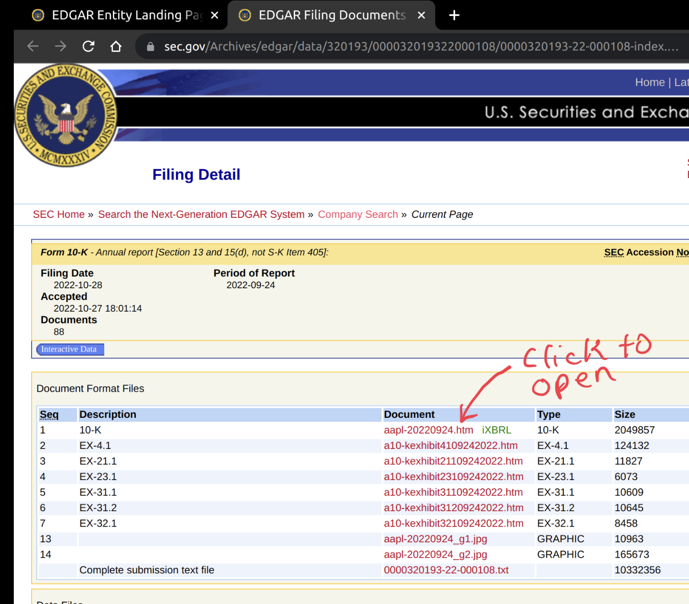
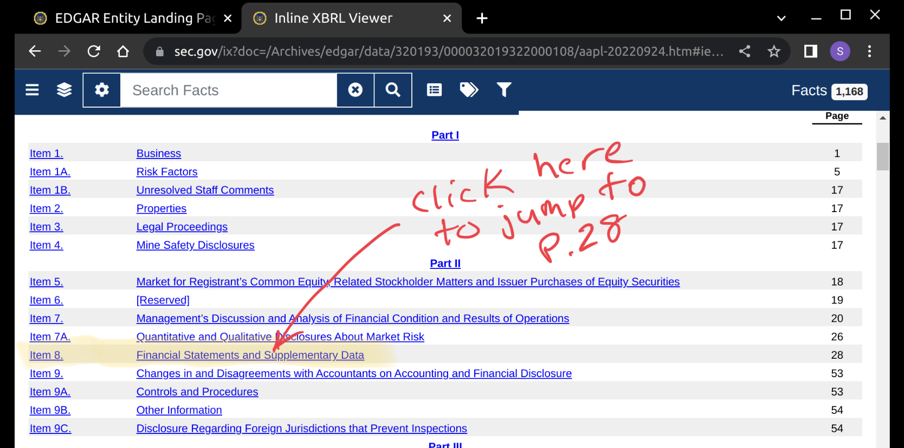
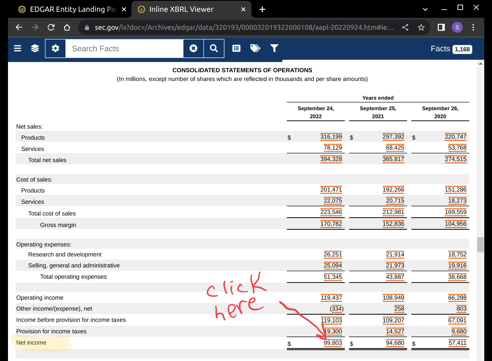
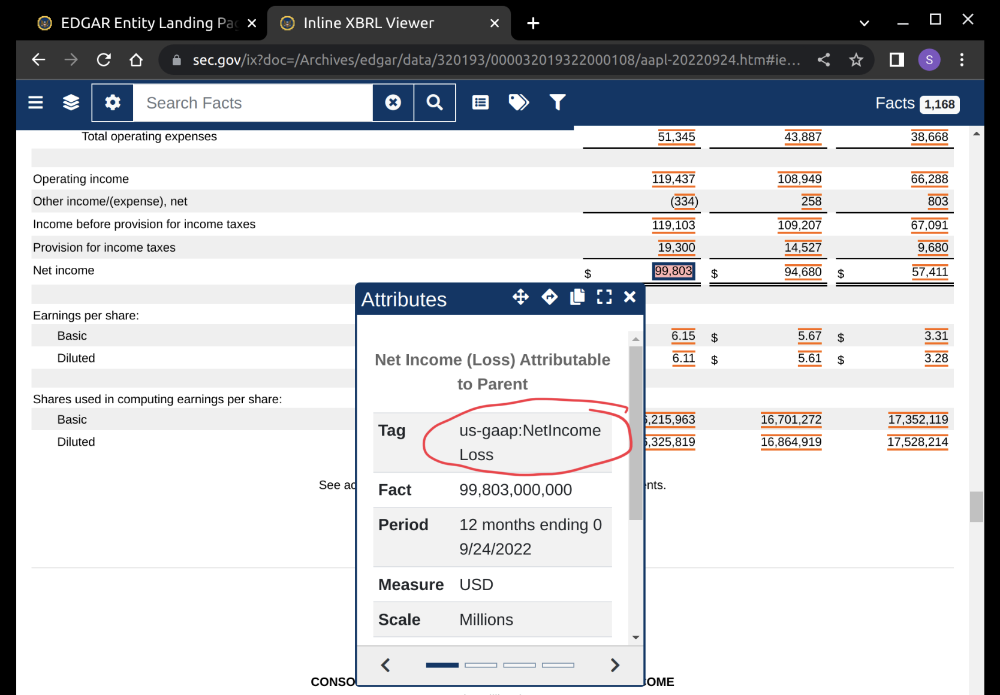

1 Introduction
If you want to do fundamental research on a publicly traded company, then there are a lot of services that will charge you a lot of money for that data. What if you don’t have a lot of money? And, what if you don’t trust any data that doesn’t come directly from its source? In this article I will show you how to use the vast data resources provided by the US government… for free.
2 Intro to XBRL tagging
A public company is required, by the SEC, to use XBRL line item tags whenever it files its 10-Q (quarterly) and 10-K (annual) financial reports. There is an sec.gov API that you can use to get data on the performance of a companies fundamental metrics over time. You will need the XBRL tag name for each metric that you wish to track.
Below is a quote from an XBRL Wikipedia article that gives a technical desciption of the XBRL standard:
XBRL (eXtensible Business Reporting Language) is a freely available and global framework for exchanging business information. XBRL allows the expression of semantic meaning commonly required in business reporting. The language is XML-based and uses the XML syntax and related XML technologies such as XML Schema, XLink, XPath, and Namespaces. One use of XBRL is to define and exchange financial information, such as a financial statement. The XBRL Specification is developed and published by XBRL International, Inc. (XII).
The SEC has a page that describes how they use XBRL. It even includes a link to a YouTube video that you can watch sometime if you are having trouble sleeping.
The best way to become familiar with XBRL is to go through an example. Let’s do that below.
2.1 Find the CIK for Apple
As and example, let’s use Apple (stock ticker: APPL). Every company that files with the SEC receives a central index key (CIK). The API that we will use requires this CIK code.
Start by doing a search for a company on EDGAR. Look for the company CIK code (circled in red below) as you type in the ticker symbol. Write this value down, and then click on the search result.

2.2 Open a 10-K report
The next page (see below) will display the search results for the chosen company. Notice that the numeric part of the CIK code is included in the URL. Now, click on one of the 10-K or 10-Q reports listed under “Selected Filings”

There are several files shown on the Filing Detail page (see below). We are about the top on with the green iXBRL note beside it. Click on the link to open the filed report.

2.3 Find the finacial statements
These SEC filing reports can be quite wordy. Scroll down to the table of contents (see below) after opening the document. Find the section titled Financial Statements and click on the bookmark link. This will take you to the page where you will find several financial reports.

2.4 Identify the Net Income line item
Scroll down a little bit, until you see a table of numbers. These reports are all in a specific format that is mandated by the SEC. Each line item name is registered approved XBRL tags. If you want to find the name of the tag, then click on one of the numbers with red lines above and below it.

2.5 Find the XBRL tag name for Net Income
A pop-up window will appear (see below) showing the attributes of that line item value. Find the Tag attribute row, and copy the part that says, ‘NetincomeLoss’. This is our XBRL tag name! We now have all of the information that we need to use the API.

3 API data pull
In our example, we will attempt to plot the quarterly trend for Apple’s Net Income line item. We will be pulling the data from the data.sec.gov api.
3.1 Import python packages
These are the packages that we will need. All of them can be downloaded and installed with Anaconda.
In this example
3.2 Make the API Call
# Build up the API request URL
api_url_path = 'https://data.sec.gov/api/xbrl/companyconcept'
url = f"{api_url_path}/{cik}/us-gaap/{xbrl_tag}.json"
# Run the API request
# Note the it will not run without your email address
email_address = 'your-email@example.com'
request_tag_data = (
requests
.get(url,
headers={'User-Agent': email_address}))
# Print the status code (200 is good, 404 is bad)
print("Request status code:", request_tag_data.status_code)
print("Content Type:", request_tag_data.headers['Content-Type'])
print("Content Length:",
request_tag_data.headers['Content-Length'], 'bytes')Request status code: 200
Content Type: application/json
Content Length: 3281 bytes3.3 Take a look at the raw JSON data
{'cik': 320193,
'description': 'The portion of profit or loss for the period, net of income '
'taxes, which is attributable to the parent.',
'entityName': 'Apple Inc.',
'label': 'Net Income (Loss) Attributable to Parent',
'tag': 'NetIncomeLoss',
'taxonomy': 'us-gaap',
'units': {'USD': [...]}}3.4 Convert to a Pandas Dataframe
df_tag_data = pd.DataFrame.from_dict(tag_data['units']['USD'])
df_tag_data.sort_values(by=['filed','fy','fp']).tail(15)| start | end | val | accn | fy | fp | form | filed | frame | |
|---|---|---|---|---|---|---|---|---|---|
| 268 | 2019-09-29 | 2020-09-26 | 57411000000 | 0000320193-21-000105 | 2021 | FY | 10-K | 2021-10-29 | NaN |
| 281 | 2020-09-27 | 2021-09-25 | 94680000000 | 0000320193-21-000105 | 2021 | FY | 10-K | 2021-10-29 | NaN |
| 272 | 2020-09-27 | 2020-12-26 | 28755000000 | 0000320193-22-000007 | 2022 | Q1 | 10-Q | 2022-01-28 | CY2020Q4 |
| 283 | 2021-09-26 | 2021-12-25 | 34630000000 | 0000320193-22-000007 | 2022 | Q1 | 10-Q | 2022-01-28 | CY2021Q4 |
| 274 | 2020-09-27 | 2021-03-27 | 52385000000 | 0000320193-22-000059 | 2022 | Q2 | 10-Q | 2022-04-29 | NaN |
| 276 | 2020-12-27 | 2021-03-27 | 23630000000 | 0000320193-22-000059 | 2022 | Q2 | 10-Q | 2022-04-29 | CY2021Q1 |
| 284 | 2021-09-26 | 2022-03-26 | 59640000000 | 0000320193-22-000059 | 2022 | Q2 | 10-Q | 2022-04-29 | NaN |
| 285 | 2021-12-26 | 2022-03-26 | 25010000000 | 0000320193-22-000059 | 2022 | Q2 | 10-Q | 2022-04-29 | CY2022Q1 |
| 278 | 2020-09-27 | 2021-06-26 | 74129000000 | 0000320193-22-000070 | 2022 | Q3 | 10-Q | 2022-07-29 | NaN |
| 280 | 2021-03-28 | 2021-06-26 | 21744000000 | 0000320193-22-000070 | 2022 | Q3 | 10-Q | 2022-07-29 | CY2021Q2 |
| 286 | 2021-09-26 | 2022-06-25 | 79082000000 | 0000320193-22-000070 | 2022 | Q3 | 10-Q | 2022-07-29 | NaN |
| 287 | 2022-03-27 | 2022-06-25 | 19442000000 | 0000320193-22-000070 | 2022 | Q3 | 10-Q | 2022-07-29 | CY2022Q2 |
| 269 | 2019-09-29 | 2020-09-26 | 57411000000 | 0000320193-22-000108 | 2022 | FY | 10-K | 2022-10-28 | CY2020 |
| 282 | 2020-09-27 | 2021-09-25 | 94680000000 | 0000320193-22-000108 | 2022 | FY | 10-K | 2022-10-28 | CY2021 |
| 288 | 2021-09-26 | 2022-09-24 | 99803000000 | 0000320193-22-000108 | 2022 | FY | 10-K | 2022-10-28 | CY2022 |
Note a few things about the above table:
- There are multiple records for each quarter. This is because the financial report shows values for the current quarter, the previous quarter, and the current quarter from the previous fiscal year. It would be great if the API provided a filed describing which quarter time period was which. When we go to plot the graph we will only want to include the current quarters value for each quarter.
- The values for Q1, Q2, and Q3 come from the form 10-Q. There is no 10-Q for Q4, and the 10-K report only shows yearly totals. In order to find the values for Q4 of each year we’ll need to take the annual total and subtract the totals from Q1-3.
4 Clean and filter data
Since the data set does not have a column indicating which quarter each value is associated with, we will have to use a brute force approach. We’ll have to use a window function to pick a single record for each fiscal year & quarter. The syntax for doing window operations in Pandas is a little weird, IMO. I think that it’s easier to do this in SQL, so lets use the sqldf function from the pandasql package.
4.1 Rank records over fiscal year and period
In our first SQL query (see below), we are going to rank records over partitions defined by fiscal year and fiscal period. We’ll calculate the number of days in between the dates start and end. And, finally, we’ll create a new val_10q column to indicate the values that came from 10-Q reports. We’ll need it later when we subtract the sum of the values for Q1-3 from the annual amount to calculate the Q4 value.
df_rank = pandasql.sqldf("""
select fy, fp, end, start,
( julianday(date(end))
-julianday(date(start))
) as num_days_in_period,
val, form,
( case
when form='10-Q'
then val
else 0
end
) as val_10q,
rank()
over(
partition by fy, fp
order by
end desc,
start desc
) as rnk
from df_tag_data
where form in('10-Q','10-K')
""")
df_rank.tail(15)| fy | fp | end | start | num_days_in_period | val | form | val_10q | rnk | |
|---|---|---|---|---|---|---|---|---|---|
| 249 | 2021 | Q3 | 2020-06-27 | 2020-03-29 | 90.0 | 11253000000 | 10-Q | 11253000000 | 3 |
| 250 | 2021 | Q3 | 2020-06-27 | 2019-09-29 | 272.0 | 44738000000 | 10-Q | 44738000000 | 4 |
| 251 | 2022 | FY | 2022-09-24 | 2021-09-26 | 363.0 | 99803000000 | 10-K | 0 | 1 |
| 252 | 2022 | FY | 2021-09-25 | 2020-09-27 | 363.0 | 94680000000 | 10-K | 0 | 2 |
| 253 | 2022 | FY | 2020-09-26 | 2019-09-29 | 363.0 | 57411000000 | 10-K | 0 | 3 |
| 254 | 2022 | Q1 | 2021-12-25 | 2021-09-26 | 90.0 | 34630000000 | 10-Q | 34630000000 | 1 |
| 255 | 2022 | Q1 | 2020-12-26 | 2020-09-27 | 90.0 | 28755000000 | 10-Q | 28755000000 | 2 |
| 256 | 2022 | Q2 | 2022-03-26 | 2021-12-26 | 90.0 | 25010000000 | 10-Q | 25010000000 | 1 |
| 257 | 2022 | Q2 | 2022-03-26 | 2021-09-26 | 181.0 | 59640000000 | 10-Q | 59640000000 | 2 |
| 258 | 2022 | Q2 | 2021-03-27 | 2020-12-27 | 90.0 | 23630000000 | 10-Q | 23630000000 | 3 |
| 259 | 2022 | Q2 | 2021-03-27 | 2020-09-27 | 181.0 | 52385000000 | 10-Q | 52385000000 | 4 |
| 260 | 2022 | Q3 | 2022-06-25 | 2022-03-27 | 90.0 | 19442000000 | 10-Q | 19442000000 | 1 |
| 261 | 2022 | Q3 | 2022-06-25 | 2021-09-26 | 272.0 | 79082000000 | 10-Q | 79082000000 | 2 |
| 262 | 2022 | Q3 | 2021-06-26 | 2021-03-28 | 90.0 | 21744000000 | 10-Q | 21744000000 | 3 |
| 263 | 2022 | Q3 | 2021-06-26 | 2020-09-27 | 272.0 | 74129000000 | 10-Q | 74129000000 | 4 |
4.2 Filter the dataframe for rank=1 records
df_filtered = pandasql.sqldf("""
select
fy, fp,
end, start,
num_days_in_period,
val, form,
sum(val_10q)
over(partition by fy
) as total_val_10q
from df_rank
where rnk=1
""")
df_filtered.head()| fy | fp | end | start | num_days_in_period | val | form | total_val_10q | |
|---|---|---|---|---|---|---|---|---|
| 0 | 2009 | FY | 2009-09-26 | 2008-09-28 | 363.0 | 5704000000 | 10-K | 1229000000 |
| 1 | 2009 | Q3 | 2009-06-27 | 2009-03-29 | 90.0 | 1229000000 | 10-Q | 1229000000 |
| 2 | 2010 | FY | 2010-09-25 | 2010-06-27 | 90.0 | 4308000000 | 10-K | 9705000000 |
| 3 | 2010 | Q1 | 2009-12-26 | 2009-09-27 | 90.0 | 3378000000 | 10-Q | 9705000000 |
| 4 | 2010 | Q2 | 2010-03-27 | 2009-12-27 | 90.0 | 3074000000 | 10-Q | 9705000000 |
4.3 Finalize data for plotting
x_axis_name = 'End Date'
y_axis_name = f'{xbrl_tag} (USD in Billions)'
df_plot_data = pandasql.sqldf(f"""
select
fy as `Fiscal Year`,
( case
when fp='FY' then 'Q4'
else fp
end
) as `Fiscal Quarter`,
end as `{x_axis_name}`,
round(
case when form='10-K'
and num_days_in_period > 360
then (val-total_val_10q)/1e9
else val/1e9
end,
2
) as `{y_axis_name}`
from df_filtered
order by `{x_axis_name}`
""")
df_plot_data.tail()| Fiscal Year | Fiscal Quarter | End Date | NetIncomeLoss (USD in Billions) | |
|---|---|---|---|---|
| 49 | 2021 | Q4 | 2021-09-25 | 20.55 |
| 50 | 2022 | Q1 | 2021-12-25 | 34.63 |
| 51 | 2022 | Q2 | 2022-03-26 | 25.01 |
| 52 | 2022 | Q3 | 2022-06-25 | 19.44 |
| 53 | 2022 | Q4 | 2022-09-24 | 20.72 |